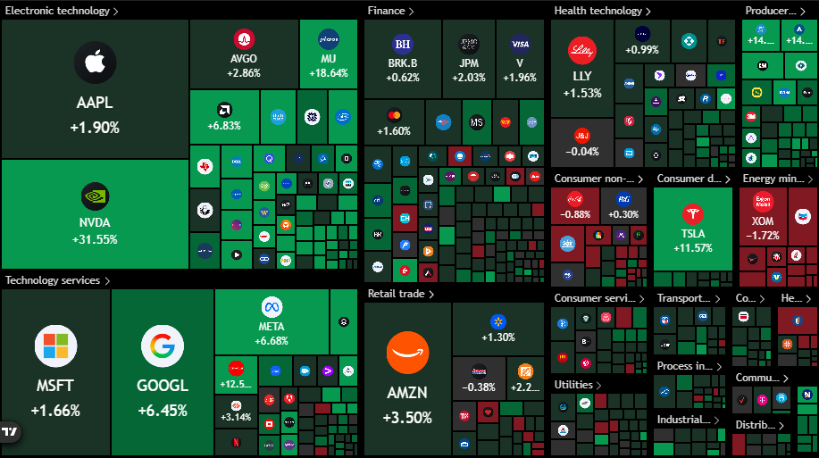
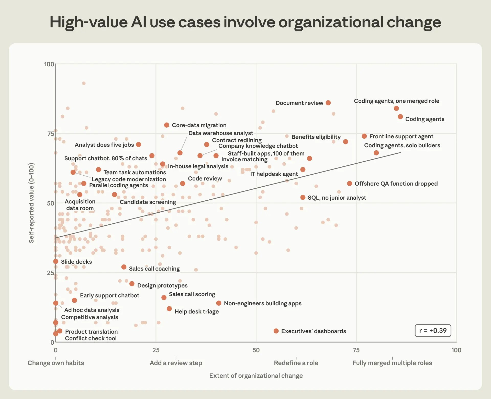
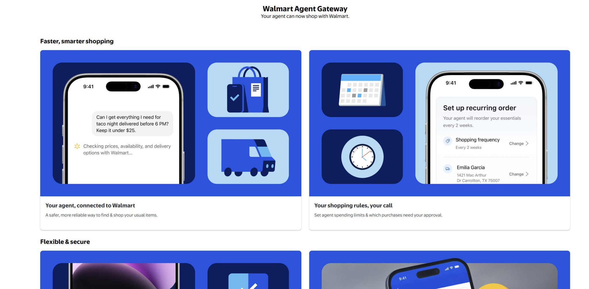

Nvidia guadagna 955 miliardi in un giorno con il ritorno di Jensen Huang, Trump entra nel consiglio, gli agenti di Gemini 4 riscrivono circuiti quantistici e gli acquisti passano agli agenti. E il bitcoin scende sotto i 60.000 dollari
Brief di martedì 24 novembre 2026 · lista X «Best» · 288 post da 49 account, dalle 13:33 del 23/11 alle 13:15 del 24/11 (ora di Roma)
👑 Il 17 novembre il titolo era «Il re è nudo». Sette giorni dopo il re ha di nuovo la corona: Nvidia reintegra Jensen Huang come CEO, presidente e consigliere, con effetto immediato, e la Borsa americana festeggia con 3.000 miliardi di dollari di capitalizzazione in più. Il resto della giornata (matematica fatta da sciami di agenti, negozi che vendono a software, mirtilli e creatina) è passato in secondo piano. Ma merita.
La notizia arriva a mercati chiusi, e i future sul Nasdaq 100 vengono sospesi dopo un +7%. All'apertura tutto si colora di verde. A fine seduta Nvidia chiude a +31,6% e aggiunge 955 miliardi di dollari di valore: il più grande guadagno giornaliero di un singolo titolo nella storia, più dell'intera capitalizzazione di tutte le aziende del mondo tranne 15. Chi scommetteva sul ribasso perde 12,2 miliardi in un giorno. L'S&P 500 sale del 4,7%, la giornata migliore da aprile 2025, e la mappa dei titoli si accende: Dell +22%, Nebius e CoreWeave +21%, Micron +19%. Huang torna in ufficio tra gli applausi e promette ai dipendenti: «Sarò un CEO migliore la seconda volta». Qualche anno fa ci stupivamo che Nvidia valesse più della Svizzera (🍫 ff.139.1 Svizzero? No, NVIDIA); oggi ne ha aggiunta mezza in sei ore e mezza.

La stessa Kobeissi Letter ricorda che la strada resta in salita: Nvidia è ancora a −12% dall'inizio del caso e a −33% dal massimo storico.
x.com/KobeissiLetter/status/2124974519567737034
Il dettaglio che fa discutere è un altro. Secondo la Casa Bianca, Trump ha partecipato di persona a una riunione del consiglio di Nvidia ed è «intervenuto» per riavere Huang. «Dobbiamo proteggere i nostri geni», ha detto a Semafor il direttore della comunicazione Steven Cheung. Il consiglio aveva chiesto «garanzie» sulla sicurezza nazionale, e le ha ricevute. Sulla lista le reazioni si dividono per scuola. Nassim Taleb divide l'umanità in due: chi crea, come Huang, e chi recita un gioco imitativo. Balaji Srinivasan spiega invece il caso con la storia: Nvidia è nata nel 1993 e si è quotata negli anni '90, prima dell'era delle azioni a doppia classe, e il suo fondatore aveva meno controllo di uno Zuckerberg. Da qui la proposta di ridefinire la buona governance come controllo dei fondatori. Anthony Pompliano chiede di azzerare l'intero consiglio. Tyler Cowen pone la domanda giusta su The Free Press: quanto vale un CEO? Il mercato, lunedì, ha dato una cifra.
x.com/nntaleb/status/2124886502320517448
Fino a ieri il tema era Riemann: «l'ipotesi di Riemann è risolta, la morte è la prossima», scrive Bryan Johnson. Ross Douthat, rilanciato da Cowen, chiude il cerchio: un uomo con il giubbotto di pelle conta più per il Nasdaq delle scoperte matematiche da semidei. Intanto Google DeepMind mette squadre di agenti Gemini 4 a costruire circuiti quantistici che riducono fino a 10 volte il costo delle simulazioni future. Il metodo è il dettaglio più interessante: gli agenti lavorano in parallelo, si riuniscono ogni quattro ore per discutere le idee e verificano ogni ottimizzazione con Lean, il dimostratore formale. Soluzioni e libreria finiscono open source. Ethan Mollick segnala uno sciame di agenti che prova a risolvere P=NP, mentre qualcuno già teme per la crittografia. Nel 2023 elencavamo i limiti matematici di ChatGPT (⚠️ ff.48.4 I limiti (matematici) di ChatGPT). Tre anni dopo il limite si è spostato sulla verifica, e la verifica la fa una macchina (🔭 ff.102.3 Automatizzare la ricerca scientifica).
Un nuovo studio di Anthropic, «Working with AI», dice due cose secondo Mollick: il valore maggiore arriva quando l'azienda cambia organizzazione, e i lavoratori resistono, anche per questo motivo. Il grafico è chiaro: «cambiare le proprie abitudini» rende poco, unire più ruoli in uno rende molto (correlazione +0,39). Mollick aggiunge un terzo punto che nel paper non c'è: anche i casi d'uso più avanzati delle aziende, fuori dal codice, non sono così avanzati. Il potenziale inespresso resta enorme. OpenAI prova a colmarlo dal basso con OpenWorks, un programma che finanzia esperti locali di AI per le piccole imprese. Anthropic, intanto, scopre la gravità della Borsa: il titolo scende sotto il prezzo di IPO di 83 dollari, a −28% dal massimo.

Mentre Amazon blocca gli agenti, Walmart apre loro la porta con l'Agent Gateway, e i dati di Stripe suggeriscono che lo shopping via agenti stia partendo davvero (e che chi prova, resta). Come si convince un software a comprare? a16z e The Prompting Company hanno testato quattro agenti su 1.270 richieste e 11.307 acquisti simulati: contano spedizione, resi e credibilità del venditore, e basta chiedere di creare un account per fermare l'agente prima della cassa. Il gruppo di Mollick a Wharton però avverte: le preferenze degli agenti crollano con poco. Cambia l'ordine dei siti, cambia un titolo, e cambia il consiglio. Exa, il motore di ricerca per agenti, prevede che entro il 2030 gli agenti cercheranno sul web 1.000 volte più delle persone; oggi gestisce 2 miliardi di richieste al mese. Gli agenti autonomi di 🤖 ff.144.3 Agenti autonomi e Moltbook ora hanno anche il portafoglio.

Rhonda Patrick mangia mirtilli e yogurt quasi ogni giorno e cita uno studio su adulti di 65-80 anni: una polvere di mirtilli selvatici pari a 178 grammi di frutti freschi al giorno, per 12 settimane, con risultati migliori del placebo in alcuni test di memoria e funzioni esecutive. Prende anche 10 grammi di creatina al giorno, il doppio della dose standard di 3-5 grammi, pensando al cervello più che ai muscoli, soprattutto nelle notti di poco sonno. Ai muscoli pensa Peter Diamandis: dopo i 30 anni se ne perde il 3-8% per decennio, e il calo accelera dopo i 60. Il rovescio della medaglia arriva dai farmaci GLP-1: in uno studio sul BMJ i pazienti assumevano solo il 58% del fabbisogno energetico, con fibre all'86% sotto il valore di riferimento, vitamina D al 79% e ferro al 50%. Dimagrire, insomma, non basta: serve un piano di allenamento, ma per la vita (🏋️♂️ ff.152.2 Un piano di allenamento, ma per la vita). E una buona notizia: negli Stati Uniti la sopravvivenza a cinque anni dal cancro ha superato per la prima volta il 70%, dal 49% di metà anni '70, e per i tumori metastatici è salita dal 17% al 35% (💉 ff.155.4 Modernità contro il cancro).
Mentre l'azionario festeggiava, il bitcoin è sceso sotto i 60.000 dollari, con 850 milioni di liquidazioni in 24 ore, e il più grande ETF, IBIT, ha perso 3,0 miliardi di deflussi solo a novembre (🪙 ff.50.2 Oro, argento, mirra, birra e Bitcoin). Per chi cerca altro: Steven Pinker su Quillette distingue tra sicurezza dell'AI e catastrofismo, Paul Graham rivela che per giudicare il carattere dei fondatori chiede semplicemente a Jessica, e Tyler Cowen pubblica i migliori libri di non-fiction del 2026.